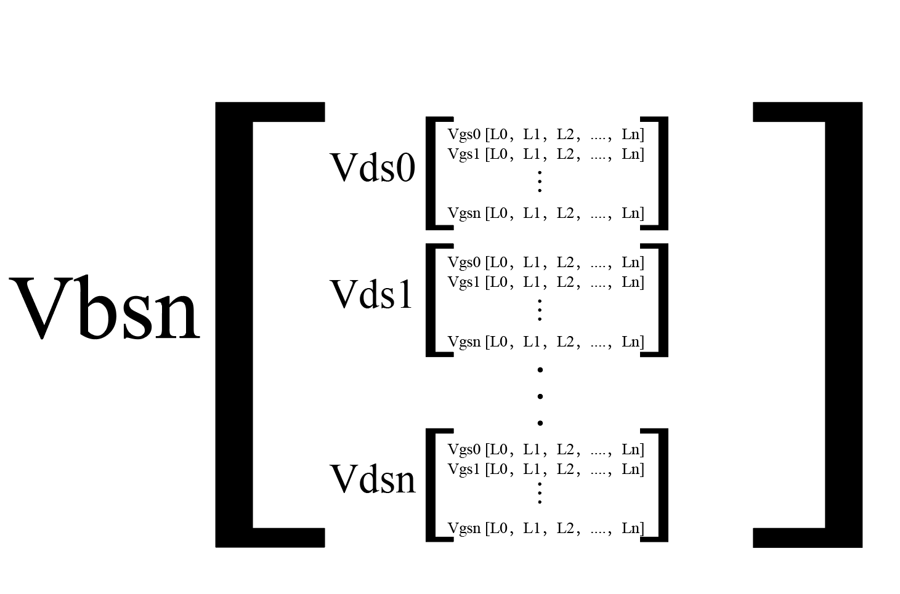
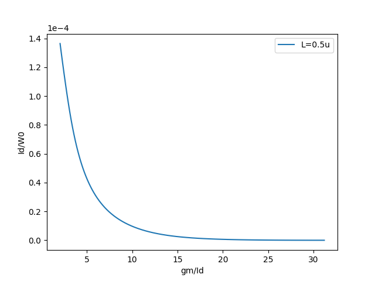
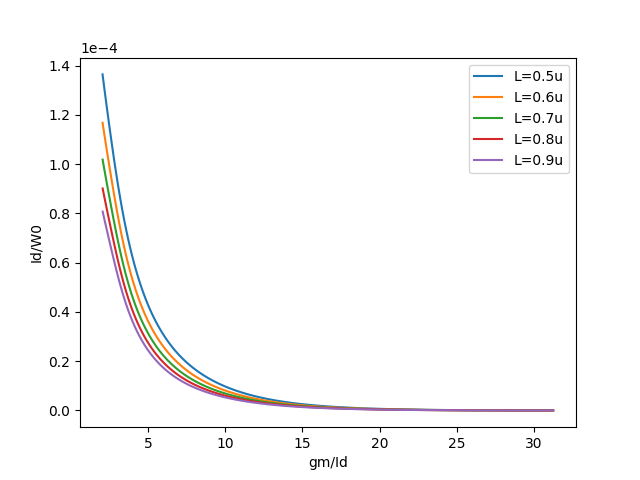
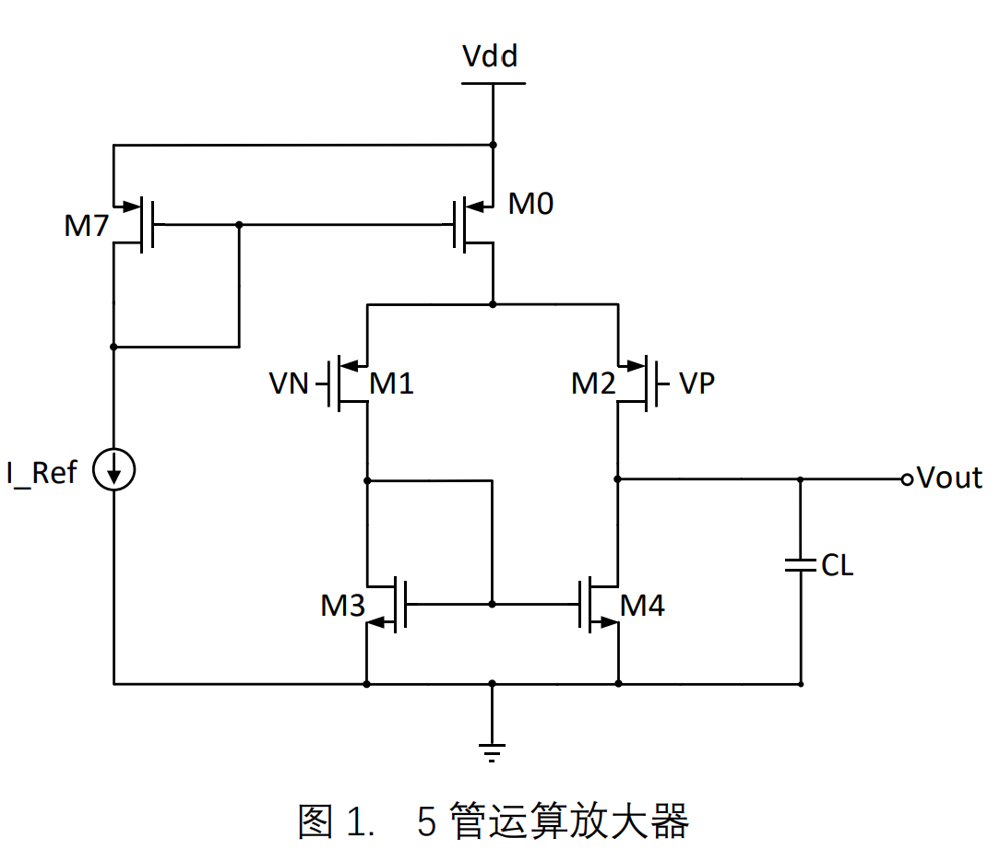
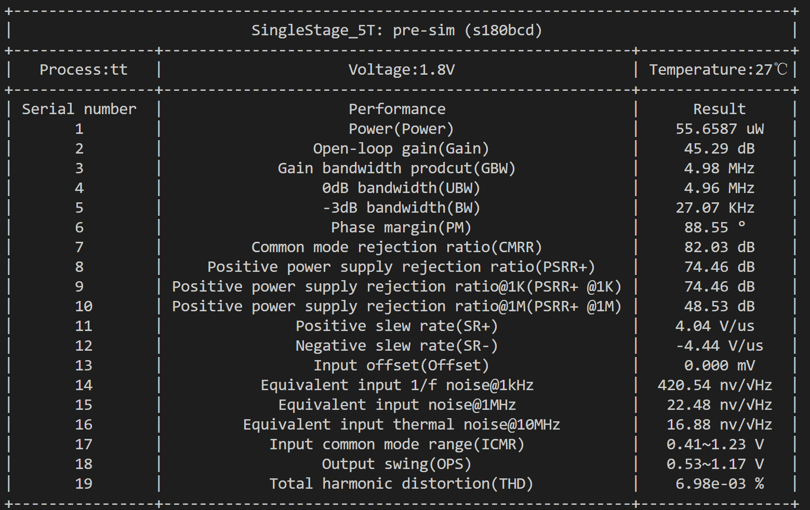

gm/ID设计方法
gm/ID设计方法
前言
在先进工艺制程下，使用平方律模型进行电路设计的方法不在有效，模拟电路设计者更倾向于直接"tuning"电路，成为所谓的"Spice Monkey"。为了改变这种现象，鲁汶大学的Jespers于1996在JSSC的一篇论文首次提出了gm/ID方法，试图让模拟电路设计回归到设计者的知识与经验相结合的劳动过程。gm/ID方法一经问世就受到热捧，随后于2017年，Jespers 和Murmann 两位大牛联袂，系统的整理gm/ID设计方法理论，重点总结了gm/ID方法的实践经验和过程，并编撰成一书《Systematic Design of Analog CMOS Circuits: Using Pre-Computed Lookup Tables》。从此, 电路设计自动化多了一种方式---基于gm/ID方法的电路设计自动化。
gm/ID方法的基本原理
gm/ID方法是以MOSFET的gmoverid参数为主导的一种设计方法，本质是一种查表法。通过对MOSFET的端电压(Vg、Vd、Vs和Vb)、栅长(L)进行扫描，建立起一套与工艺相关的MOSFET参数查找表。在使用时，通过绘制gmoverid参数与其他参数(如selfgain、ft和gds等)在不同栅长下的变化曲线，建立对MOSFET行为的直觉。
gm/ID设计方法中的另一个重要参数为ID/W。ID/W的物理意义为电流密度，又称为jd。在完成MOSFET的gmoverid参数确定和栅长L确定之后，需要使用ID/W参数来确定MOSFET的栅宽度，如以下公式所示：
$W_r=\frac{ID_r}{jd}$
- $ID_r$为MOSFET实际流过的电流
- $W_r$为完成设计后MOSFET宽度
gm/ID方法的一些Q&A
为什么扫描建表的时候不对栅宽W进行扫描？
这里主要是利用了MOSFET在端电压和栅长已知时，MOSFET的参数会随着W的变化呈现出等比例变化趋势的特性。利用这个特性，在建表时，只需要固定栅宽在某一个合理的值即可。而在设计应用时，会大量使用单位化的处理，例如ID/W,gds/ID这一类的单位化参数，这些单位化参数仅仅与MOSFET的端电压和栅长相关，而与W弱相关。这样处理后，在设计时只需考虑MOSFET的栅长和工作点设置即可。
为什么选择gmoverid而不是其他参数？
- 近似计算下，$\frac{gm}{ID}$ = $\frac{2}{Vov}$，而Vov是平方律模型时常用的参数，因此使用gmoverid可以很好的从平方律设计过度到gm/ID设计。
- gmoverid参数范围稳定在2-38.5之间，受工艺变化的影响小。
- gmoverid的物理意义为单位电流跨导效率，在投入相同电流ID下，当跨导效率越高，gm也就越大，MOSFET的增益也就越大。
gmoverid参数的经验值如何选择？
- 当MOSFET作为放大管，gmoverid取大，可以有效减少热噪声并提高增益。当电源电压大于等于1.8V时，一般可取15-18，低压工作时取20以上甚至是25以上，进行亚阈值设计。
- 当MOSFET作为电流镜时，gmoverid取小，可以有效减少热噪声。一般取8-12之间，低压时可以取更大。
- gmoverid取大取小是相对概念，在设计中既含有放大管又有电流镜，通常是电流镜的gmoverid小于放大管的。
对于单个MOSFET，如何使用gmoverid方法确定其尺寸？
对于MOSFET有两种方式可以确定其尺寸，一是通过部分性能要求，如通过带宽要求得到对单个MOSFET的跨导gm约束，二是通过功耗约束得到单个MOSFET的电流ID约束。因此可分为已知gm、已知ID以及已知gm和ID三种情景来说明。
已知gm
- 确定gmoverid的值：$gmoverid_d$
- 根据增益、速度或设计经验确定L。如有单管有增益或速度的需求，则在$gmoverid_d$ 下扫描L，输出$selfgain$ 或$ft$随L的变化关系，然后选择L，得到 $L_d$。
- 根据 $ID_d=\frac{gm}{gmoverid_d}$，计算得到单管所需的电流 $ID_d$。
- 根据 $L_d$ 和 $gmoverid_d$ ，查表得到$ID_c$，则 $jd_d=\frac{ID_c}{W_c}$。这里的$ID_c$是查表得到的结果。 $W_c$ 指的是扫描建表时MOSFET设置的栅宽W，是一个确定且唯一的值。
- 根据 $W_d=\frac{ID_d}{jd_d}$，计算得到$W_d$。
- 至此可确定MOSFET的栅长 $L_d$ 和栅宽 $W_d$。
已知ID
- 确定gmoverid的值：$gmoverid_d$
- 根据增益、速度或设计经验确定L。如有单管有增益或速度的需求，则在$gmoverid_d$ 下扫描L，输出$selfgain$ 或$ft$随L的变化关系，然后选择L，得到 $L_d$。
- 根据 $gm_d=gmoverid_d*ID$，计算得到单管所需的跨导 $gm_d$（这一步可以省略，如确实需要gm值，在进行计算）。
- 根据 $L_d$ 和 $gmoverid_d$ ，查表得到$ID_c$，则 $jd_d=\frac{ID_c}{W_c}$。这里的$ID_c$是查表得到的结果。 $W_c$ 指的是扫描建表时MOSFET设置的栅宽W，是一个确定且唯一的值。
- 根据 $W_d=\frac{ID}{jd_d}$，计算得到$W_d$。
- 至此可确定MOSFET的栅长 $L_d$ 和栅宽 $W_d$。
已知gm和ID
若同时对gm和ID都有约束，即gmoverid值是确定的，按照已知ID的流程进行即可。
建表时对端电压也都进行了扫描，那么在设计的时候如何使用呢？
虽然对MOSFET的4个端电压都进行了扫描，但根据MOSFET的特性，最终表现为三个电压差Vgs，Vds和Vbs。其中Vgs和gmoverid强相关，可以认为gmoverid和Vgs二者相互确定唯一值。基于这个前提，在使用gm/ID方法进行电路设计时，若非对电路尺寸设计初值有着非常严格的准确度要求，一般设置Vbs=0(即忽略衬偏效应)，Vds=Vmt/2(Vmt为器件模型的最大耐压值)。
更多关于gm/ID设计方法的内容，请查阅《Systematic Design of Analog CMOS Circuits: Using Pre-Computed Lookup Tables》。
在TED中使用gm/ID查找表
TED中使用的gm/ID查找表，在建表时MOSFET的栅宽固定为5um，在求解电流密度jd等归一化参数时，将参数/5（单位：参数的单位/um）即可。
使用说明
- 从lut模块引入LUT_DB：
from lut import LUT_DB - 使用LUT_DB的lookup()方法查询所需要的参数
- 执行测例: pdk some_file.py::some_test，其中pdk 在使用时换成具体支持的工艺。
from lut import LUT_DB
def test():
value = LUT_DB().lookup(
model="nch",
outpar="ID",
L=0.6,
VGS=0.6,
VDS=0.6,
VBS=-0.1,
method="comb",
)lookup()参数说明
实例化LUT_DB后，可以通过lookup方法输入model（Mos管类型），outpar（目标参数），VGS，VDS，VBS，L，method这些参数来获得目标仿真参数的准确值。以下是关于这些参数的一些说明：
model的可选参数为：nch，pch，nch_v1，pch_v1, 无默认值。
outpar的可选参数为："ID", "VT","VDSAT", "GM", "FUG", "GDS", "CGG", "CGS", "GMOVERID", "SELF_GAIN","CGD", "CDG", "RON", "CDD", 无默认值。
method的可选参数为：
comb和vector，默认值为vector。VGS，VDS，VBS的参数说明。若model参数指定查询nmos的参数，则VGS和VDS必须大于0，VBS必须要小于0；若model参数指定查询pmos的参数，则VGS和VDS必须小于0，VBS必须要大于0。
对于method参数，具体说明和用法如下：
comb代表排列组合，即对于List（或array）VGS，VDS，VBS，L中的每一个元素采取排列组合的方式生成一组向量组成的矩阵，矩阵中包含的四维向量个数为四组List（或array）的元素个数之积，并查找或推理该矩阵中每个向量对应的精确值。其使用方式如下所示。
def test_comb():
vgs = np.array([0.5, 0.6])
vds = np.array([0.3, 0.4, 0.54])
vbs = np.array([0, -0.2, -0.3, -0.5, -0.8])
L = np.array([1, 2, 2.5, 3])
outpar = "GMOVERID"
gmid = LUT_DB().lookup(
model="nch", outpar=outpar, VDS=vds, VGS=vgs, VBS=vbs, L=L, method="comb"
)
debug(f"gmid={gmid}")comb模式下，L、VDS、VGS和VBS的长度可以不相等。该模式输出的数据格式如下图所示：

vector模式为向量查询，当VGS，VDS，VBS，L中的元素个数完全相等时，生成一组向量组成的矩阵，矩阵中包含的四维向量个数为输入List（或array）的元素个数。其使用方式如下所示。
def test_vector():
vgs = np.array([0.4, 0.5, 0.6, 0.65])
vds = np.array([0.3, 0.35, 0.62, 0.71])
vbs = np.array([0, -0.1, -0.2, 0])
L = np.array([1, 2, 2.5, 3])
outpar = "GMOVERID"
gmid = LUT_DB().lookup(model="nch", outpar=outpar, VDS=vds, VGS=vgs, VBS=vbs, L=L)
debug(f"gmid={gmid}")vector模式要求L,VDS,VBS和L的长度必须完全相等，因此上述案例输出的结果一个长度为4的行向量，并且行向量中每个元素的结果对应于案例中由vgs、vds、vbs和L构成的矩阵的每个列向量查询结果。
此外VGS，VDS，VBS，L除了支持输入列表和数组外还支持输入单个浮点型数据，其使用方式如下所示：
from lut import *
value = LUT_DB().lookup(model="nch", outpar="ID", L=1.06, VGS=0.7, VDS=0.1, VBS=-0.3)lookup_Vgs()说明
LUT_DB()还提供给了一个反向查询Vgs参数的函数lookup_Vgs()。lookup_Vgs()的输入参数包括model，VDS，VBS和L，以及三个关键字参数jd,GMOVERID和VDSAT。其中model、VDS、VBS和L的用法与lookup()相同，而jd、GMOVERID和VDSAT参数只能同时存在一个。该函数通过给定VDS、VBS、L以及jd/GMOVERID/VDSAT其中一个返回对应的Vgs，用法如下所示：
from lut import *
VBS = -0.5
gmid = 15
L = 2
for Vds in np.arange(0.5, 1.18, 0.05):
VGS = LUT_DB().lookup_Vgs("nch_v1", L=L, VDS=Vds, VBS=VBS, GMOVERID=gmid)使用示例
- 单参数查询
如下所示，展示的是nmos类型的查找表单参数查询结果和使用仿真器得到的结果对比。该例的重点在于: 对于nmos类型，使用查找表时vgs和vds必须大于0，vbs必须小于0。
def test_nch():
"""
单查询 nch:vgs和vds>0, vbs<0
"""
vgs = 0.6
vbs = 0
vds = 0.434
L = 1
outpar = "GMOVERID"
gmid = LUT_DB().lookup(model="nch", outpar=outpar, VDS=vds, VGS=vgs, VBS=vbs, L=L)
debug(f"vgs={vgs}V ,vds={vds}V,vbs={vbs}V时,gmid={gmid}")
@testbench
def run_sim():
G, D, B = Node(3)
V(D, Vss(), dc=vds)
V(G, Vss(), dc=vgs)
V(B, Vss(), dc=vbs)
(D, G, Vss(), B) >> Mosfet(model="nch", l=L * 1e-6, w=5e-6).rename("m1")
raw = dc(options="save mm1")
gmid_real = raw.get_signal(f"mm1:{outpar.lower()}")
debug("gmid:", gmid[0], gmid_real)
debug(f"erro(%):{abs(gmid[0]-gmid_real)/gmid_real*100}")如下所示，展示的是pmos类型的查找表单参数查询结果和使用仿真器得到的结果对比。该例的重点在于: 对于pmos类型，使用查找表时vgs和vds必须小于0，vbs必须大于0。
def test_pch():
"""
单查询 pch: vgs和vds<0, vbs>0
"""
vgs = -0.7
vbs = 0.2
vds = -0.6
L = 1
outpar = "GMOVERID"
gmid = LUT_DB().lookup(model="pch", outpar=outpar, VDS=vds, VGS=vgs, VBS=vbs, L=L)
debug(f"vgs={vgs}V ,vds={vds}V,vbs={vbs}V时,gmid={gmid}")
@testbench
def run_sim():
G, D, B = Node(3)
V(D, Vdd(), dc=vds)
V(G, Vdd(), dc=vgs)
V(B, Vdd(), dc=vbs)
(D, G, Vdd(), B) >> Mosfet(model="pch", l=L * 1e-6, w=5e-6).rename("m1")
raw = dc(options="save mm1")
gmid_real = raw.get_signal(f"mm1:{outpar.lower()}")
debug("gmid:", gmid[0], gmid_real)
debug(f"erro(%):{abs(gmid[0]-gmid_real)/gmid_real*100}")- 单扫描：扫描VGS，并绘制gm/ID vs Id/W0 曲线
def test():
"""
对VGS进行扫描
"""
# 构建扫描变量，这里对Vgs进行扫描
vgs = np.arange(0.1, 1.2, 0.01)
vds = np.ones(len(vgs)) * 0.6
vbs = np.zeros(len(vgs))
L = np.ones(len(vgs)) * 0.5
# 扫描参数时，MOSFET的W为5um
w0 = 5
# 查找gmid
gmid = LUT_DB().lookup(
model="nch",
outpar="GMOVERID",
VDS=vds,
VGS=vgs,
VBS=vbs,
L=L,
)
# 查找ID并除以w0即为Id/W0
Id_W = LUT_DB().lookup(model="nch", outpar="ID", VDS=vds, VGS=vgs, VBS=vbs, L=L) / 5
# 绘制曲线
plt.ticklabel_format(axis="y", style="sci", scilimits=(0, 0))
plt.xlabel("gm/Id")
plt.ylabel("Id/W0")
plt.plot(gmid, Id_W, label="L=0.5u")
plt.legend()
# 保存图片
figpath = f"{get_ted_data()}/gmid_curves/"
mkdirp(figpath)
plt.savefig(f"{figpath}/gmid_vs_id_w.png")
# 输出结果
debug(f"gmid:{gmid}")
debug(f"Id/W0:{Id_W}")以t65为例，得到的曲线图如下所示：

注: 使用此例所示的ID/W进行栅宽计算时，得到的栅宽单位为um，即 $W=\frac{ID}{jd} (um)$。
- 二重扫描：扫描VGS和L，并绘制gm/Id vs Id/W0 曲线
def test3():
"""
扫描VGS和L
"""
l = np.arange(0.5, 1, 0.1)
w0 = 5
fig, ax = plt.subplots()
ax.set_xlabel("gm/Id")
ax.set_ylabel("Id/W0")
ax.ticklabel_format(axis="y", style="sci", scilimits=(0, 0))
for i in l:
vgs = np.arange(0.1, 1.2, 0.01)
vds = np.ones(len(vgs)) * 0.6
vbs = np.zeros(len(vgs))
L = np.ones(len(vgs)) * i
# 查找gmid
gmid = LUT_DB().lookup(
model="nch", outpar="GMOVERID", VDS=vds, VGS=vgs, VBS=vbs, L=L
)
# 查找ID并除以w0即为Id/W0
Id_W = (
LUT_DB().lookup(model="nch", outpar="ID", VDS=vds, VGS=vgs, VBS=vbs, L=L)
/ w0
)
# 绘制曲线
ax.plot(gmid, Id_W, label=f"L={round(i,1)}u")
ax.legend()
# 保存图片
figpath = f"{get_ted_data()}/gmid_curves/"
mkdirp(figpath)
plt.savefig(f"{figpath}/gmid_vs_id_w_with_sweep_L.png")以t65为例，得到的曲线图如下所示：

- 带约束查询：已知gmid，并且对MOSFET的self_gain有要求， 求满足self_gain时的最小栅长和Vgs。
gm_gds_req = 200 # 需要的gm/gds值
ID1 = I0 / 2 # 流经M1的电流
l = np.arange(0.5, 5, 0.1) # 栅长搜索范围
"""计算M1的L和W"""
for i in l:
vgs = LUT_DB().lookup_Vgs(
"pch",
L=i,
VDS=Vdd / 2,
VBS=0,
GMOVERID=gmid1,
)
# PMOS的VGS和VDS应为负数，VBS为正数
gm_gds = LUT_DB().lookup(
model="pch",
outpar="SELF_GAIN",
VDS=-Vdd / 2,
VGS=-vgs,
VBS=0,
L=i,
)[0]
# debug(vgs, gm_gds)
if gm_gds > gm_gds_req:
# 输出满足条件的第一个栅长值，也就是最小栅长
L1 = round(i, 1)
Vgs1 = vgs
debug(f"选择的栅长为:L={L1}")
break- 带约束查询：已知MOSFET的Vgs最大值为Vgs_max，gmid的最大值为gmid_max，并且MOSFET的gds/id小于等于a，求此时MOSFET的最小栅长和对应的Vgs。( 由vgs和gmoverid的关系可知，Vgs_max最大意味着gmid_min，gmid_max意味着Vgs_min。因此该例子约束了gmid或vgs的范围。)
for i in l:
for vgs3 in np.arange(Vgs3_max, 0.2, -0.002):
gmid3 = LUT_DB().lookup(
model="nch", outpar="GMOVERID", VDS=vgs3, VGS=vgs3, VBS=0, L=i
)[0]
id3 = LUT_DB().lookup(
model="nch", outpar="ID", VDS=vgs3, VGS=vgs3, VBS=0, L=i
)[0]
gds3 = LUT_DB().lookup(
model="nch", outpar="GDS", VDS=vgs3, VGS=vgs3, VBS=0, L=i
)[0]
if gmid3 < gmid3_max and gds3 / id3 < gds_id3:
Vgs3 = vgs3
L3 = round(i, 1)
done = 1
debug(f"L3={i},Vgs3={vgs3},gmid3:{gmid3}")
break
if done == 1:
break使用gm/ID方法设计OTA5T运放的尺寸参数
设计指标
使用gm/ID设计方法在s180bcd工艺上设计一个运放，设计指标如下：
| 指标 | 值 |
|---|---|
| 工艺 | s180bcd |
| 电源电压(Vdd) | 1.8V |
| 基准电流(I_Ref) | 10uA |
| 偏置电流(I0) | 20uA |
| 负载电容(CL) | 5p |
| 增益带宽积(GBW) | >5MHz |
| 开环增益(Av) | >40dB |
| 相位裕度(PM) | >60° |
| 共模输入范围(ICMR) | 0.3V~0.93V |
| 共模抑制比(CMRR) | >60dB |
| 等效输入热噪声(@10MHz) | <20nv/√Hz |
| 共模电压(Vcm) | Vdd/2 |
结构选择

设计代码
def test4():
from scipy import constants as cs
"""
根据指标计算可得：
gm = 2ΠGBW*CL = 160uS
ID1 = I0/2 = 10uA
gm/Id1 = 16S/A
这里牺牲一些精度,默认Vds=Vdd/2
"""
Av = 40 # dB
CMRR = 70 # dB
Vdd = 1.8
Vcm = Vdd / 2
GBW = 5e6
Cl = 5e-12
I0 = 20e-6
Iref = 10e-6
Snf = 20e-9
T = 300
gmid1 = np.ceil(2 * np.pi * GBW * Cl / (I0 / 2)) # 选择的gmid
gm_gds_req = 200 # 需要的gm/gds值
ID1 = I0 / 2 # 流经M1的电流
l = np.arange(0.5, 5, 0.1) # 栅长搜索范围
"""计算M1的L和W"""
for i in l:
vgs = LUT_DB().lookup_Vgs(
"pch",
L=i,
VDS=Vdd / 2,
VBS=0,
GMOVERID=gmid1,
)
# PMOS的VGS和VDS应为负数，VBS为正数
gm_gds = LUT_DB().lookup(
model="pch",
outpar="SELF_GAIN",
VDS=-Vdd / 2,
VGS=-vgs,
VBS=0,
L=i,
)[0]
# debug(vgs, gm_gds)
if gm_gds > gm_gds_req:
# 输出满足条件的第一个栅长值，也就是最小栅长
L1 = round(i, 1)
Vgs1 = vgs
debug(f"选择的栅长为:L={L1}")
break
# 计算栅宽
jd1 = (
LUT_DB().lookup(
model="pch",
outpar="ID",
VDS=-Vdd / 2,
VGS=-Vgs1,
VBS=0,
L=L1,
)[0]
/ 5
)
W1 = round(ID1 / jd1, 1)
# 至此M1的W和L设计完毕
debug(f"M1的栅宽为:{W1},栅长为:{L1},gmid为:{gmid1}")
"""计算M3的L和W"""
# Vcm_min = 0.2 > Vgs3,4 - |Vgs1,2| + |Vdsat1,2|
Vdsat1 = LUT_DB().lookup(
model="pch", outpar="VDSAT", VDS=-Vdd / 2, VGS=-Vgs1, VBS=0, L=L1
)[0]
Vgs3_max = round(0.3 + Vgs1 - Vdsat1, 4)
# debug(f"Vgs3 max : {Vgs3_max},Vdsat1:{Vdsat1}")
"""利用等效输入噪声获得M3的gmid上限,即Vgs的下限(Vgs越大gmid越小)"""
# Sn(f)=sqrt((8kTγ)/(2ΠGBW*CL)*(1+(gmid3/gmid1)))
gmid3_max = (np.power(Snf, 2) * 2 * np.pi * GBW * Cl / (8 * cs.k * T) - 1) * gmid1
gds_id3 = 0.08
done = 0
for i in l:
for vgs3 in np.arange(Vgs3_max, 0.2, -0.002):
gmid3 = LUT_DB().lookup(
model="nch", outpar="GMOVERID", VDS=vgs3, VGS=vgs3, VBS=0, L=i
)[0]
id3 = LUT_DB().lookup(
model="nch", outpar="ID", VDS=vgs3, VGS=vgs3, VBS=0, L=i
)[0]
gds3 = LUT_DB().lookup(
model="nch", outpar="GDS", VDS=vgs3, VGS=vgs3, VBS=0, L=i
)[0]
if gmid3 < gmid3_max and gds3 / id3 < gds_id3:
Vgs3 = vgs3
L3 = round(i, 1)
done = 1
debug(f"L3={i},Vgs3={vgs3},gmid3:{gmid3}")
break
if done == 1:
break
jd3 = (
LUT_DB().lookup(
model="nch",
outpar="ID",
VDS=Vgs3,
VGS=Vgs3,
VBS=0,
L=L3,
)[0]
/ 5
)
W3 = round(ID1 / jd3, 1)
debug(f"M3的栅宽为:{W3},栅长为:{L3},gmid为:{gmid3}")
"""计算M0的L和W"""
# CMRR(mag) = self_gain0 * Av(mag) * gmid3/gmid1
# vcm_max = 0.65 < Vdd - |Vgs1,2|-|Vdsat0|
Vdsat0_max = Vdd - 0.93 - Vgs1
# debug(Vdsat0_max, Vgs1)
Vds0 = Vcm - Vgs1
done0 = 0
for j in np.arange(0.5, 5, 0.2):
for vgs0 in np.arange(0.7, 0.4, -0.002):
Vdsat0 = LUT_DB().lookup(
model="pch", outpar="VDSAT", VDS=-Vds0, VGS=-vgs0, VBS=0, L=j
)[0]
self_gain0 = LUT_DB().lookup(
model="pch", outpar="SELF_GAIN", VDS=-Vds0, VGS=-vgs0, VBS=0, L=j
)[0]
gmid0 = LUT_DB().lookup(
model="pch", outpar="GMOVERID", VDS=-Vds0, VGS=-vgs0, VBS=0, L=j
)[0]
cmrr_mag = self_gain0 * np.power(10, Av / 20) * gmid3 / gmid0
if cmrr_mag > np.power(10, CMRR / 20) and Vdsat0 < Vdsat0_max:
L0 = round(j, 1)
Vgs0 = vgs0
done0 = 1
# debug(f"L0={L0},Vgs0={Vgs0},gmid0:{gmid0}")
break
if done0 == 1:
break
jd0 = (
LUT_DB().lookup(model="pch", outpar="ID", VDS=-Vds0, VGS=-Vgs0, VBS=0, L=L0)[0]
/ 5
)
W0 = round(I0 / jd0, 1)
debug(f"M0的栅宽为:{W0},栅长为:{L0},gmid为:{gmid0}")
""""计算M7的W"""
Vgs7 = Vgs0
Vds7 = Vgs7
jd7 = (
LUT_DB().lookup(model="pch", outpar="ID", VDS=-Vds7, VGS=-Vgs7, VBS=0, L=L0)[0]
/ 5
)
W7 = round(Iref / jd7, 1)
debug(f"M7的栅宽为:{W7},栅长为:{L0}")仿真结果
